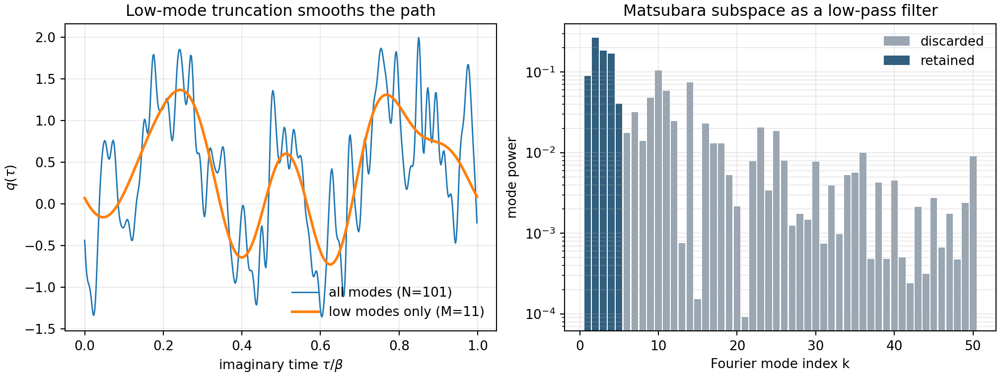

Matsubara Series - Part II
Low Modes and the Matsubara Phase
Part I showed that replacing the exact quantum Liouvillian by a classical one is too blunt for nonlinear systems. Matsubara dynamics keeps a more structured classical limit: only the smooth low-frequency normal modes of the imaginary-time path are propagated.
From beads to modes
A discretized Kubo path can be viewed as a periodic imaginary-time loop. Expanding that loop in normal modes gives
The real basis used in the code is
where \(x=\tau/\beta\). The low modes change smoothly along imaginary time; the high modes contain rapid bead-to-bead roughness.
Matsubara Hamiltonian
After truncating to the \(M\) smooth modes, the effective Hamiltonian has the form
with an averaged path potential
For the quartic benchmark, the code evaluates this integral by quadrature over \(q(\tau)\) and computes the gradient directly in mode space.
The phase term
The Matsubara distribution is not merely \(e^{-\beta H_M}\). A complex phase appears:
This phase is the conserved quantity associated with imaginary-time translation symmetry. Keeping it is what lets Matsubara dynamics conserve the quantum Boltzmann distribution. It is also the source of the sign or phase problem that appears in practical calculations.
Workflow
- Generate a periodic path from many Fourier components.
- Keep only the \(M=11\) lowest Matsubara modes.
- Reconstruct the low-mode path and compare it with the full path.
- Compute the retained spectral power and RMS high-frequency component.
Result

Connection to CMD and RPMD
When only the centroid mode is retained, the construction points toward centroid molecular dynamics. When the phase is analytically continued and the resulting spring term is retained while the imaginary pieces are discarded, one recovers the logic behind RPMD-like dynamics. These are practical descendants, not exact replacements: they simplify the phase structure that makes full Matsubara dynamics hard.
Code used in this note
- matsubara_mode_filter.py generates the Fourier path, applies the \(M=11\) low-mode truncation, and prints the retained-power diagnostics.
References
- Hele, Willatt, Muolo, and Althorpe, J. Chem. Phys. 142, 134103 (2015).
- Willatt, Matsubara Dynamics and its Practical Implementation, PhD thesis, University of Cambridge (2017).
- Royer, J. Math. Phys. 25, 2873 (1984).